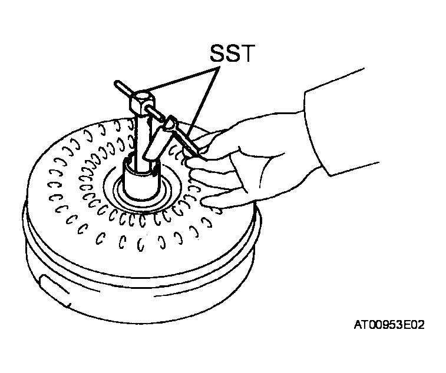
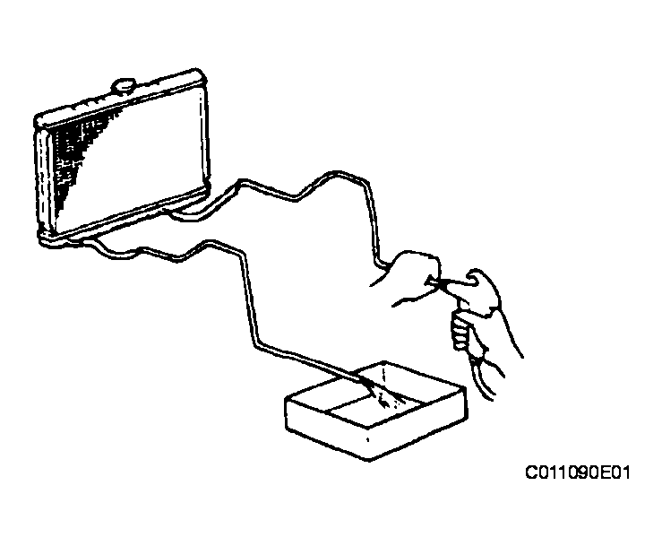
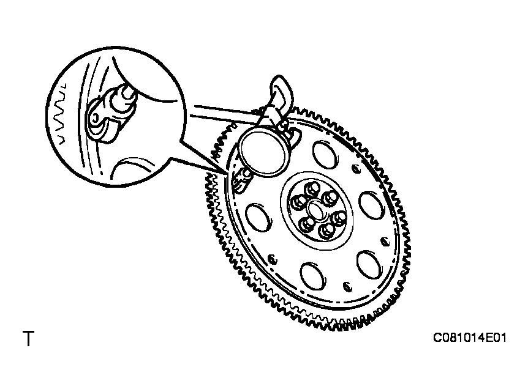

Torque Converter Clutch And Drive Plate: Inspection
WARNING: This page is about a different variant/trim than selected.
- INSPECT TORQUE CONVERTER CLUTCH ASSEMBLY
- Inspect the one-way clutch.
- Install SST in the inner race of the one-way clutch.

Courtesy of © TOYOTA, LICENSE AGREEMENT TMS1002SST 09350-32014 (09351-32010)
- Set SST so that it fits in the notch of the converter hub and in the outer race of the oneway clutch.
SST 09350-32014 (09351-32020)
- With the torque converter standing on its side, check that the clutch locks when SST is turned counterclockwise and rotates freely and smoothly when turned clockwise. If the results are not as specified, clean the converter and recheck the one-way clutch. If the results still are not as specified, replace the converter.
- Install SST in the inner race of the one-way clutch.
- Determine the condition of the torque converter clutch.
- Check that the following conditions are met:
- During the stall test or when the shift lever is on N, metallic sounds are not emitted from the torque converter clutch.
- The one-way clutch turns in one direction and locks in the other direction.
- The amount of powder in the ATF is not greater than the sample shown in the illustration.
If the results are not as specified, replace the torque converter clutch assembly.
HINT:
The sample illustration shows approximately 0.25 liters (0.26 US qts, 0.22 Imp. qts) of the ATF taken from a removed torque converter clutch.
- Check that the following conditions are met:
- Replace the ATF in the torque converter clutch.
- If the ATF is discolored and/or has a foul odor, stir the ATF in the torque converter clutch thoroughly and drain the ATF with the torque converter facing upward.
- Clean and check the oil cooler and oil pipe line.
- If the torque converter clutch is inspected or the ATF is replaced, clean the oil cooler and oil pipe line.

Courtesy of © TOYOTA, LICENSE AGREEMENT TMS1002- Apply compressed air of 196 kPa (2 kgf/cm2 , 28 psi) into the inlet hose.
- If a large amount of powder is found in the ATF, add new ATF using a bucket pump and clean the oil cooler and oil pipe line again.
- If the ATF is cloudy, inspect the oil cooler (radiator).
- If the torque converter clutch is inspected or the ATF is replaced, clean the oil cooler and oil pipe line.
- Prevent deformation of the torque converter clutch and damage to the oil pump gear.
- When any marks due to interference are found on the end of the bolt for the torque converter clutch and on the bottom of the bolt hole, replace the bolt and torque converter clutch.
- All of the bolts should be the same length.
- Make sure no spring washers are missing.
- Inspect the one-way clutch.
- INSPECT DRIVE PLATE AND RING GEAR SUB-ASSEMBLY
- Set up a dial indicator and measure the drive plate runout.

Courtesy of © TOYOTA, LICENSE AGREEMENT TMS1002Maximum runout: 0.20 mm (0.0079 in.)
If the runout is greater than the maximum or if the ring gear is damaged, replace the drive plate. If installing a new drive plate, note the orientation of the spacers and tighten the bolts.
Torque: 88 N*m (900 kgf*cm, 65 ft.*lbf)
- Check the ring gear for any damage.
If the ring gear is damaged, replace the drive plate.
- Set up a dial indicator and measure the drive plate runout.